Instruções
Cŕeditos
O SCRATCH
Para a criação dos projetos voltados à sustentabilidade, iremos utilizar o scratch, uma plataforma online com uma linguagem de programação baseada em blocos, para conseguirmos trabalhar com uma maior facilidade. Lembre-se de criar uma conta para utilizar o site e postar o projeto futuramente! Em seguida, aperte em criar.
A INTERFACE
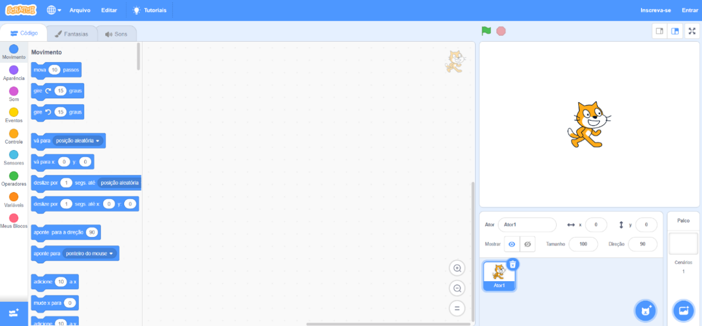Ao entrar na aba criar, somos introduzidos à interface de criação do Scratch e podemos notar uma vasta quantidade de botões distribuídos pela tela. Podemos notar a presença de uma bandeira verde e um octógono vermelho em cima do sprite. Eles representam o botão de início e o botão de término.
OS SPRITES
Um sprite é a imagem de um personagem do jogo, no caso acima, a imagem do gatinho é o sprite daquele personagem. É muito importante lembrar que um personagem, na grande maioria dos casos, possui mais de um sprite, utilizados para sua animação. No caso do gatinho, o sprite inicial ele está andando e, no segundo, correndo.
O Scratch disponibiliza uma grande quantidade de sprites disponíveis. Para acessá-los, clique no botão inferior direito da tela, com um emoji de gato, para ser redirecionado a uma aba com mais sprites disponíveis.
O CÓDIGO
Ao lado esquerdo da tela, podemos clicar na opção código para termos acesso aos blocos de programação do jogo.
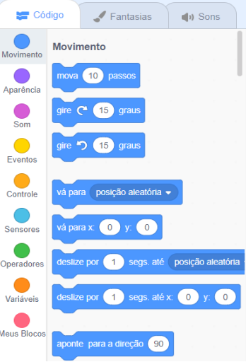BLOCOS DE MOVIMENTO
A secção de movimentos é a responsável por qualquer tipo de movimento realizado no jogo, seja no personagem ou em outro objeto. Podemos mover os personagens utilizando o sistema de passos, rotações e por coordenadas em eixos x e y.
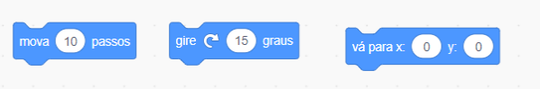BLOCOS DE APARÊNCIA
A secção de aparência é responsável pelas alterações visuais no jogo, como criar balões de fala, alterações em tamanho e esconder ou mostrar sprites.
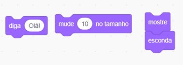BLOCOS DE SOM
A secção de sons é a responsável por controlar todos os sons do jogo. É importante saber que não adicionamos sons por essa opção, os sons do jogo são inseridos na aba sons, de que falaremos mais para frente.
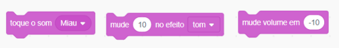BLOCOS DE EVENTOS
A secção de eventos é a responsável pela grande parte de comandos do jogo.
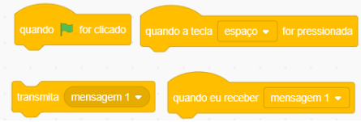Dois blocos muito importantes dentro dela são os blocos “Transmita” e “Receber”, responsáveis pela comunicação entre blocos distintos. Exemplo:
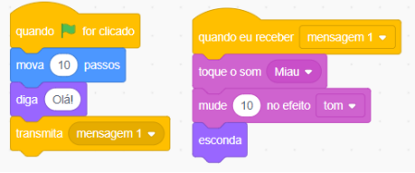BLOCOS DE CONTROLE
Os blocos de controle são responsáveis por controlar o sistema de blocos.
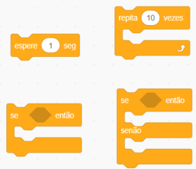Dentro dos blocos de controle, nós temos um bloco muito importante: o “Se - Então”. Esse comando é muito importante, pois podemos colocar condições dentro de nosso programa.
BLOCOS SENSORIAIS
A secção de blocos está ligada ao sistema de contato dos sprites.
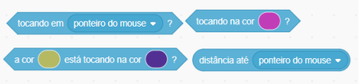Essa secção está fortemente ligada ao bloco Se - Então, pois muitas condições são criadas pelas uniões dos dois blocos. Exemplo:
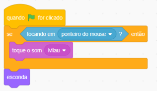BLOCOS OPERADORES
Assim como os blocos sensoriais, os blocos operadores também estão fortemente ligados ao sistema de condições, porém voltados a um sistema numérico.
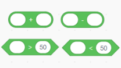BLOCOS PERSONALIZADOS
Caso deseje um bloco personaliado, você pode criá-lo na ultima opção.
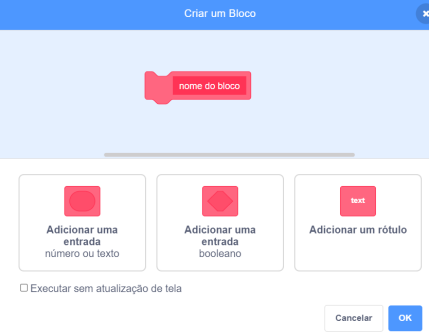AS VARIÁVEIS
Outra parte fundamental de um jogo são suas variáveis. Uma variável armazena um valor que poderá ser usado por toda a aplicação.
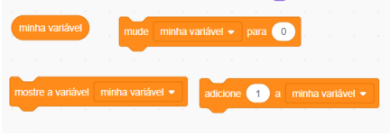Exemplo no jogo criado:
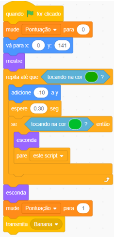O VISUAL
Ao lado da aba códigos, temos a aba fantasia, onde podemos realizar alterações nos sprites criados e no fundo do jogo.
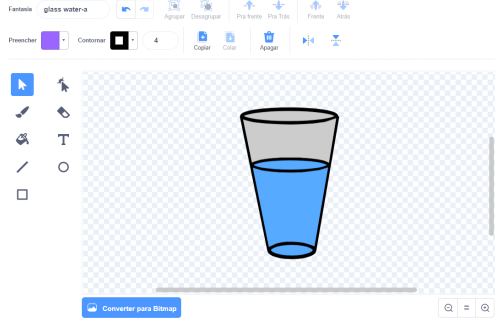EDIÇÃO DE SOM
Ao lado da aba fantasia, nos temos a aba sons. Aqui, podemos adicionar e criar sons para o jogo, podendo ser sons dentro do jogo, como sons fora do jogo.
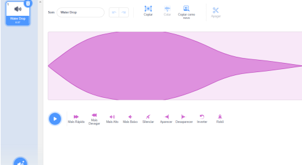UTILIZAÇÃO DO SCRATCH NA CRIAÇÃO DO PROJETO
INTERFACE
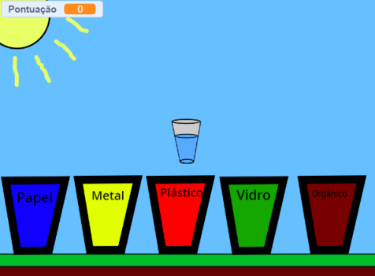SPRITES
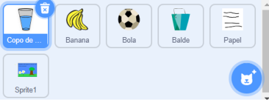CÓDIGOS DOS SPRITES
COPO
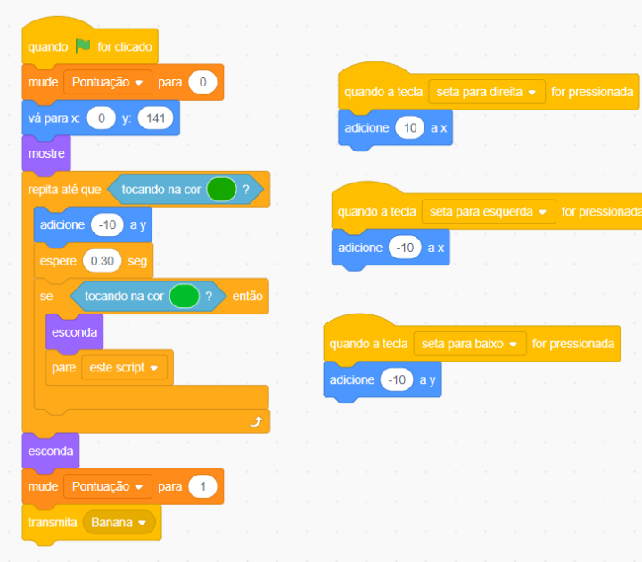BANANA
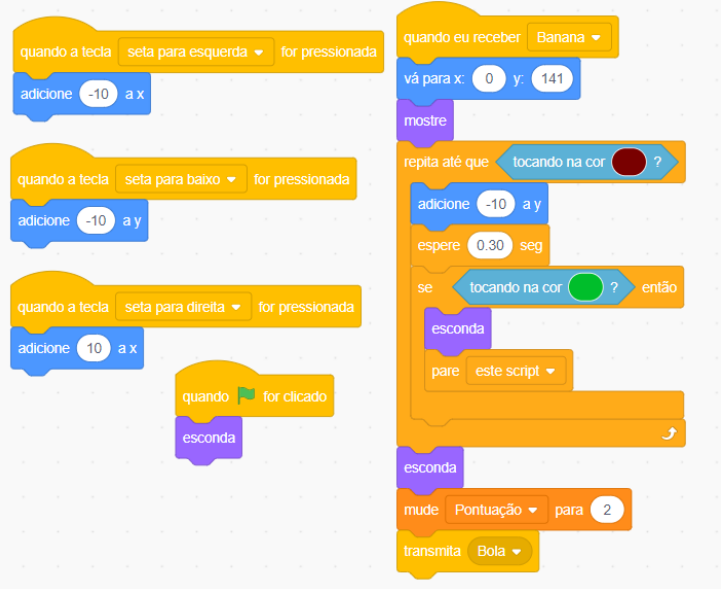BOLA
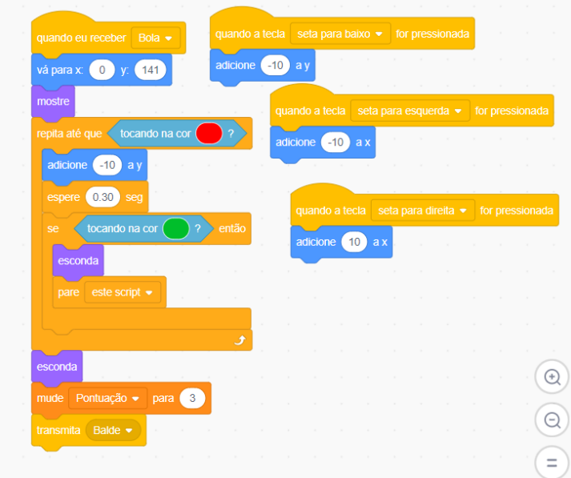BALDE
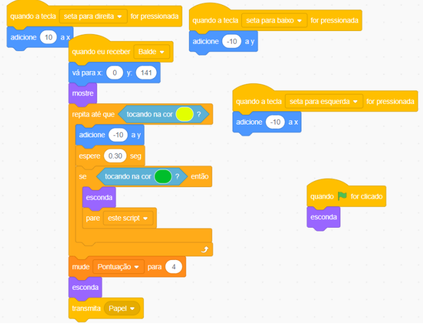PAPEL
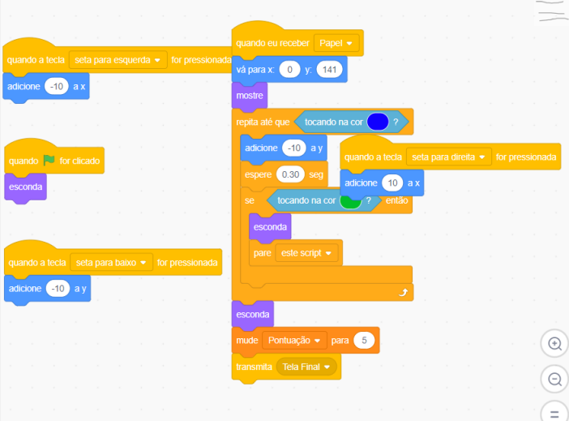CÓDIGO DA TELA FINAL
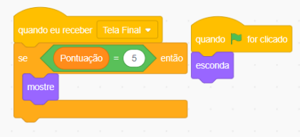MÃOS À OBRA
Agora que você esta familiarizado com o ambiente scratch, vamos produzir um jogo voltado ao meio ambiente! Não há regras! Use a sua imaginação ao máximo que conseguir!